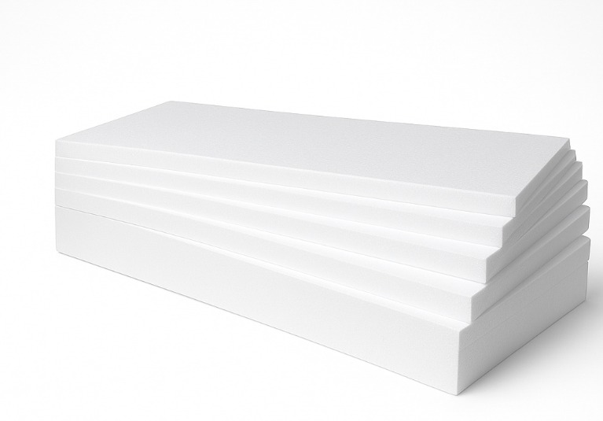

Thermocol Sheets Packaging Material Supplier in Bengaluru

Thermocol Sheets for Packaging and Product Protection
Shinde Packaging Products is a wholesale Thermocol Sheets Supplier in Bengaluru, Karnataka, India. We supply thermocol sheets in various sizes and thicknesses for packaging, cushioning, insulation and product protection. Bulk enquiries are welcome from Bengaluru and customers across India.
Thermocol is lightweight and helps reduce the risk of damage by providing cushioning around packaged products.
Applications of Thermocol
- Protective packaging for fragile products
- Electronics and appliance packaging
- Product cushioning during transportation
- Industrial and commercial packaging
- Insulation and protective applications
Why Choose Shinde Packaging Products?
- Packaging material supplier in Bengaluru
- Multiple packaging product options
- Bulk supply options
- Enquiry and quotation assistance
Contact Us for Thermocol
Shinde Packaging Products
Bengaluru, Karnataka, India
Phone: +91 6361177533
Phone: +91 9449889992
Frequently Asked Questions About Thermocol Sheets
1. What is thermocol used for in packaging?
Thermocol is used for cushioning and protecting fragile products, electronics and appliances during storage and transportation.
2. Why is thermocol used for product protection?
Thermocol is lightweight and provides cushioning around products to help reduce the risk of damage during handling and transit.
3. Where can I buy thermocol sheets in Bengaluru?
Contact Shinde Packaging Products in Bengaluru for thermocol packaging material enquiries, pricing and bulk orders.